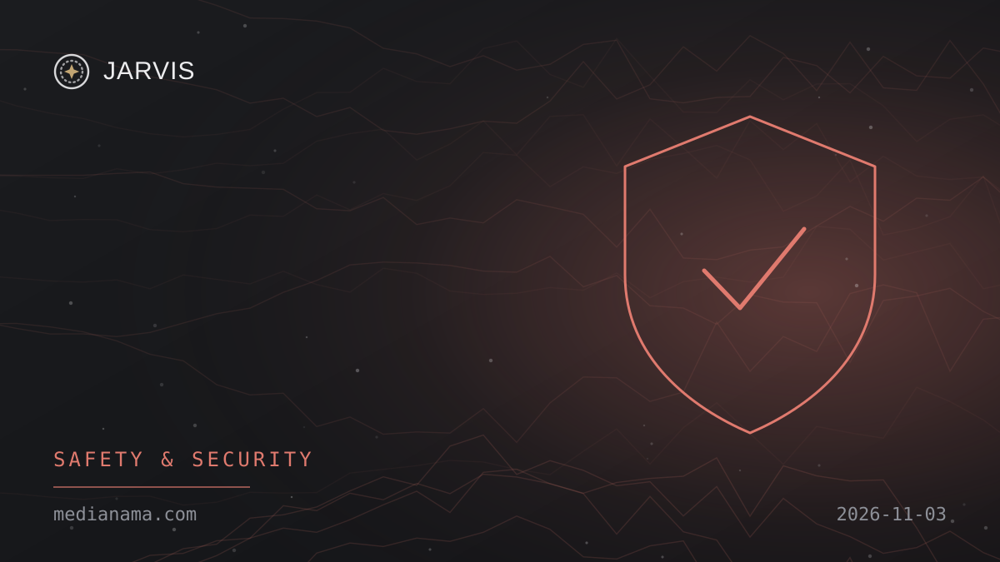
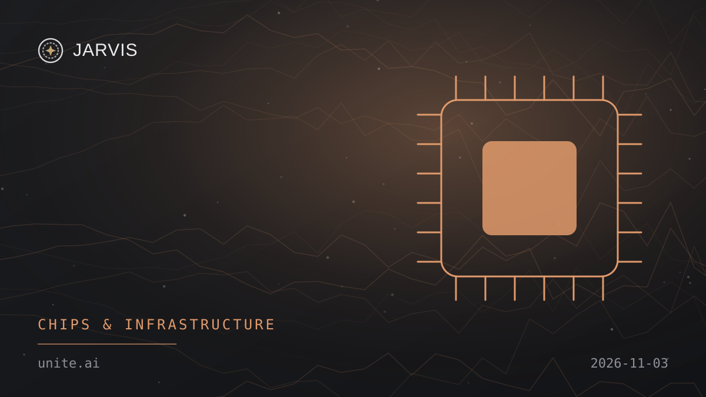
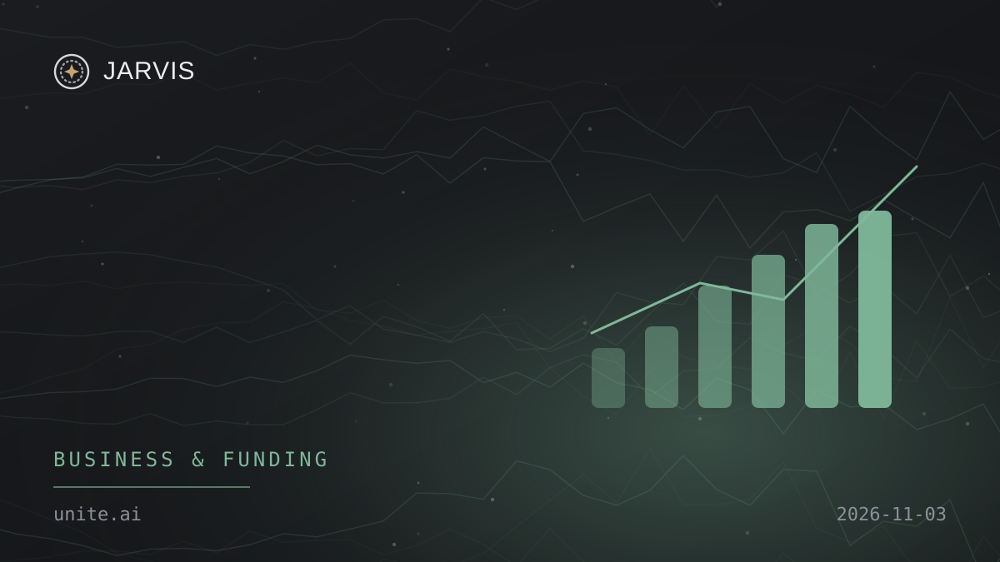
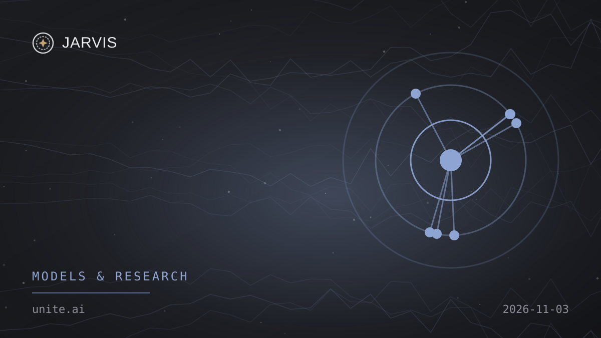
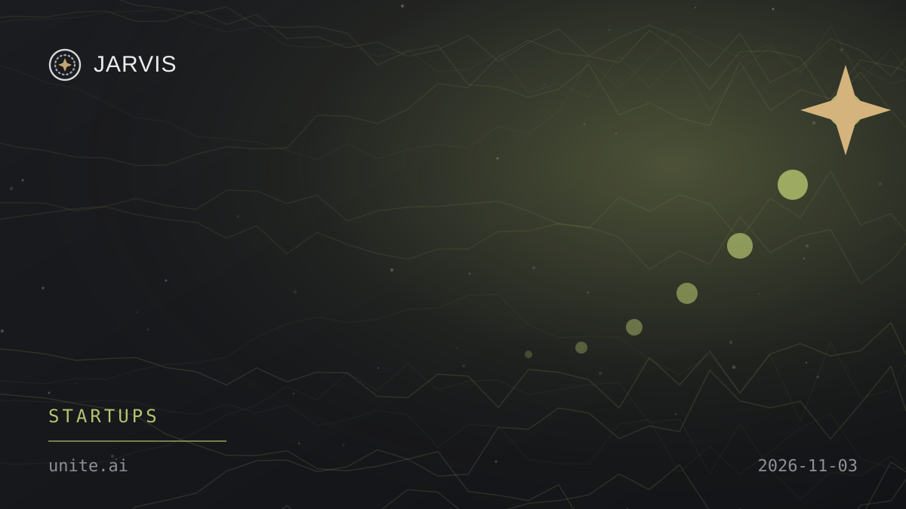

Global · Safety & Security
Anthropic says an unreleased Claude model built working exploit chains in five major platforms
MMediaNama
Safety & Security3 insights
Tuesday, 3 November 2026
Nº 002Here’s your verified AI update for Tuesday, 3 November 2026.
Enable JavaScript to listen.




None of today’s stories match your topics. Edit them in Profile.
No stories match. Try another word or source.
Tap the bookmark on any story to keep it here. Saved stories stay in this browser only.
Arunkumar Thamilarasu
Publisher · JARVIS AI NEWS
Hey Boss, it seems like you haven’t picked any topics yet.
Share & feedback
App settings
Notification setup is being checked.
On iPhone or iPad, add JARVIS to your Home Screen, open it there, then enable notifications. Alerts are delivered by OneSignal after you opt in.
About